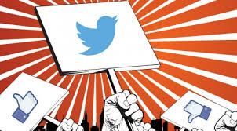
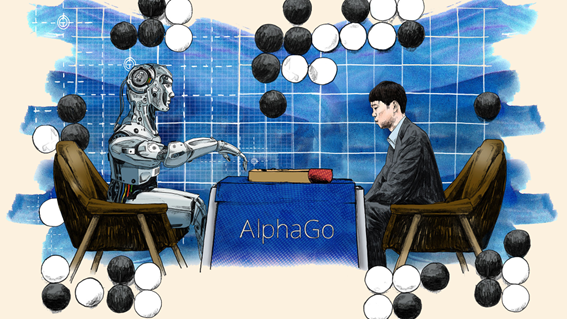
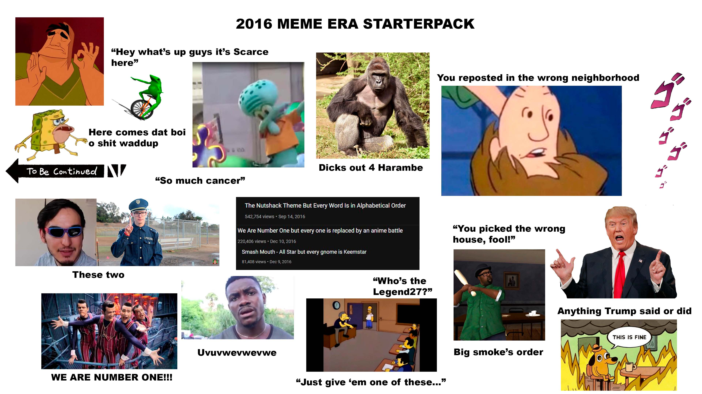

📋 Resumo
e 2010 havia consolidado a era social e móvel, e 2014–2015 viram a explosão definitiva dos smartphones, 2016 marca a entrada da humanidade em uma fase completamente nova: a fase em que a internet não apenas organiza nossas relações, mas também nossas crenças, decisões, eleições, identidades e conflitos sociais. É o ano em que se torna evidente que o ambiente digital não é mais um espaço neutro, mas uma arena de disputa política, cultural e ideológica.
2016 é lembrado por duas grandes crises mundiais que redefiniram o futuro da tecnologia:
(1) o referendo do Brexit, no Reino Unido.
(2) e as eleições presidenciais dos Estados Unidos, que elegeram Donald Trump.
📚 Detalhes
Ambos os eventos mostraram que as redes sociais haviam se tornado poderosas ferramentas de manipulação, desinformação e segmentação comportamental, utilizadas por campanhas e empresas especializadas em análise de dados, como a Cambridge Analytica, que vazaria para o mundo inteiro a gravidade do problema dois anos depois. Mas já em 2016, pesquisadores alertavam que Facebook, Twitter, Google e YouTube haviam se tornado ambientes onde algoritmos priorizavam conteúdo emocional, polarizador e sensacionalista porque isso gerava engajamento — e engajamento significava lucro. O termo “fake news” explode justamente em 2016, impulsionado por ondas massivas de desinformação que circularam em grupos, páginas e anúncios segmentados. Sites inteiros foram criados para disseminar notícias fabricadas, teorias conspiratórias e narrativas polarizadas que eram turbinadas pelos algoritmos de recomendação. A internet deixa de ser apenas espaço de informação e passa a ser palco de disputa pela própria ideia de verdade. Mas ao mesmo tempo em que 2016 foi o ano da crise da informação, ele também é fundamental para a evolução tecnológica. É em 2016 que a inteligência artificial moderna — baseada em deep learning — se populariza globalmente.

O marco mais emblemático é a vitória do programa AlphaGo, criado pela DeepMind (Google), contra Lee Sedol, campeão mundial do jogo Go. O jogo era considerado impossível para computadores até então, devido à sua profundidade estratégica. A vitória do AlphaGo demonstra ao mundo que a IA não está apenas evoluindo — ela está avançando de forma acelerada, inaugurando uma nova era de aplicações, desde reconhecimento de imagens até sistemas preditivos.

Além disso, 2016 é o ano em que os assistentes virtuais finalmente se consolidam. A Amazon lança o Echo em escala global, popularizando a Alexa, enquanto o Google apresenta o Google Assistant, expandindo o conceito de casas inteligentes e controle por voz. Esses dispositivos começam a coletar grandes quantidades de dados sobre hábitos domésticos, inaugurando debates éticos sobre privacidade, vigilância e coleta de dados.
Outro fenômeno marcante de 2016 é a ascensão meteórica do aplicativo Pokémon GO, da Niantic. Combinando realidade aumentada e geolocalização, o jogo transforma o mundo físico em um gigantesco tabuleiro digital. Milhões de pessoas saem às ruas para caçar criaturas virtuais. Pokémon GO demonstra que a fronteira entre mundo digital e mundo real está desaparecendo — e que a internet pode moldar comportamentos coletivos em escala global de forma instantânea. É um dos primeiros exemplos de internet como ferramenta de mobilização física, abrindo caminho para novas formas de jogos, marketing e eventos.

2016 também é decisivo para o streaming. A Netflix lança suas primeiras produções originais de impacto global — como Stranger Things — e inaugura oficialmente o conceito de plataforma global de entretenimento. A cultura do binge-watching explode, e a televisão tradicional perde mais força. É o início da corrida do streaming, que anos depois incluiria Disney+, HBO Max, Prime Video e tantas outras. A forma de consumir cultura muda profundamente: séries deixam de ser semanais e passam a ser lançadas completas, incentivando maratonas que se tornam parte da identidade digital das pessoas. A música passa por uma transformação semelhante. Em 2016, o Spotify ultrapassa 100 milhões de usuários e consolida de vez o streaming como principal forma de consumo musical. Playlists algorítmicas, como “Discover Weekly”, demonstram que recomendações automatizadas moldam o gosto musical de milhões. A era do “cada um com sua playlist” substitui o modelo tradicional de álbuns físicos e rádios, transformando completamente a indústria fonográfica.
Na mesma época, a cultura digital muda com a popularização dos memes, que deixam de ser apenas humor e passam a ser arma política, ferramenta de propaganda, crítica social e símbolo identitário. Plataformas como Twitter, Tumblr e Facebook se tornam polos de criação e viralização de conteúdo. O meme vira linguagem universal, atravessando fronteiras linguísticas e culturais. Em 2016 também ocorre a consolidação das transmissões ao vivo (lives) nas redes sociais. O Facebook lança o Facebook Live para todos os usuários, permitindo que qualquer pessoa transmita eventos, protestos, shows e acontecimentos cotidianos em tempo real. O YouTube e o Instagram seguem a mesma direção. A informação ao vivo, sem mediação, transforma o jornalismo e gera uma nova forma de engajamento: o imediatismo.

Outra mudança profunda ocorre no campo da privacidade. Em meio ao caos informacional, Apple trava uma batalha pública contra o FBI, recusando desbloquear o iPhone de um suspeito em um caso nos EUA. O episódio levanta um debate global: o que é mais importante — privacidade individual ou segurança nacional? Pela primeira vez, o público percebe que seus dispositivos não são apenas ferramentas, mas cofres que armazenam vidas inteiras. O ano de 2016 também testemunha a radicalização da cultura de influência. Instagram Stories, lançado em agosto de 2016, muda para sempre a estética e a dinâmica das redes sociais. Inspirado no Snapchat, o formato de vídeos curtos e efêmeros estimula a espontaneidade — ou a ilusão dela — e inaugura uma nova forma de presença digital contínua. A vida passa a ser documentada em fragmentos, em tempo real. A fronteira entre público e privado se dissolve.
Em resumo, 2016 é o ano em que a internet deixa de ser apenas espaço de convivência e se torna estrutura de poder. É o início da era dos algoritmos como mediadores da realidade, da desinformação como arma política, da IA avançada, da cultura global do streaming e da fusão entre mundo físico e digital. Depois de 2016, a internet não seria mais apenas ferramenta — seria o campo central onde se decide cultura, política, economia e sociedade.
The Great Hack
Streaming: https://www.netflix.com/title/80117542
.
The Social Dilemma
Streaming: https://www.netflix.com/br-en/title/81254224
.
HyperNormalisation
Documentário: https://www.youtube.com/watch?v=NCgnnePeLsk
.🔗 Fontes de Pesquisa